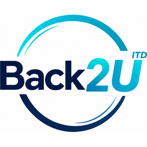

โครงงานเทคโนโลยีสารสนเทศ
Back 2 U
ศูนย์รวมการแจ้งติดตามของหายภายในห้องปฏิบัติการคอมพิวเตอร์
วิดีโอนำเสนอ 4 นาที
14 สไลด์ · สาธิตการใช้งานจริง 15 ขั้นตอน
ทดลองใช้งานจริง
back2u.web.app
ดาวน์โหลด PowerPoint
.pptx · 28 MB
ดาวน์โหลดวิดีโอ
.mp4 · 7 MB
คณะผู้จัดทำ
ช
นายชวนากร พวงสมบัติ
รหัสประจำตัว 68020180041
ช
นางสาวชมพูนุช พฤกษาพรรณ
รหัสประจำตัว 68020180043
ธ
นายธนกร แววสูงเนิน
รหัสประจำตัว 68020180016
ค
นายครินทร์ วารินทร์พงษ์
รหัสประจำตัว 68020180039
ม
นายมนัสวิน แก้วมณี
รหัสประจำตัว 68020180019
ข้อมูลโครงงาน
อาจารย์ที่ปรึกษา
อาจารย์ชุติมา เกตุษา
สาขาวิชา
เทคโนโลยีสารสนเทศและนวัตกรรมดิจิทัล
คณะ / มหาวิทยาลัย
คณะวิทยาศาสตร์และเทคโนโลยี มหาวิทยาลัยกรุงเทพสุวรรณภูมิ
ระบบ
เว็บแอปพลิเคชันแบบ PWA · React + Vite · Google Firebase